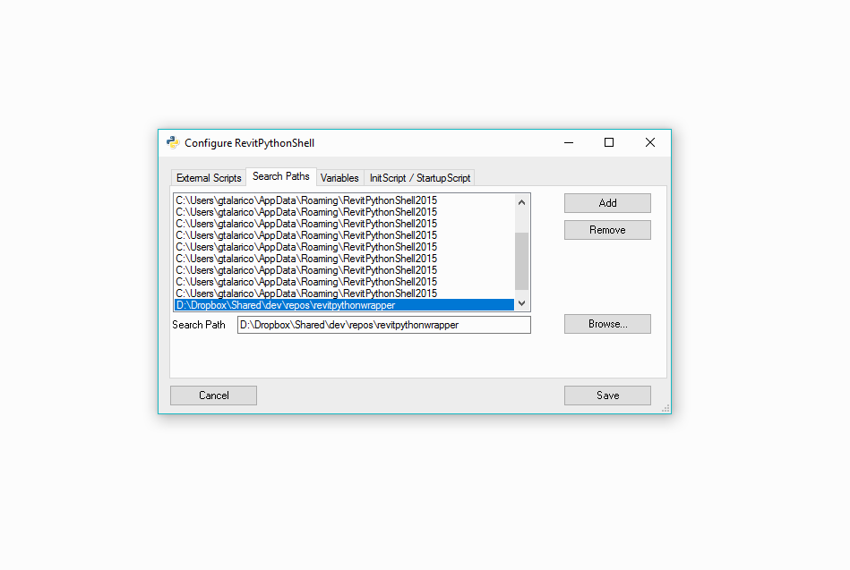
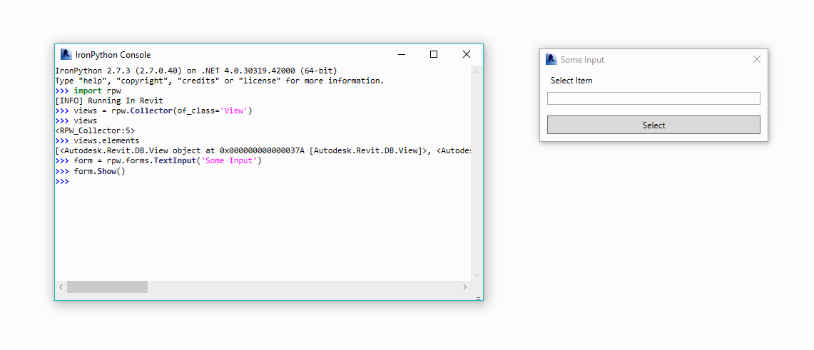
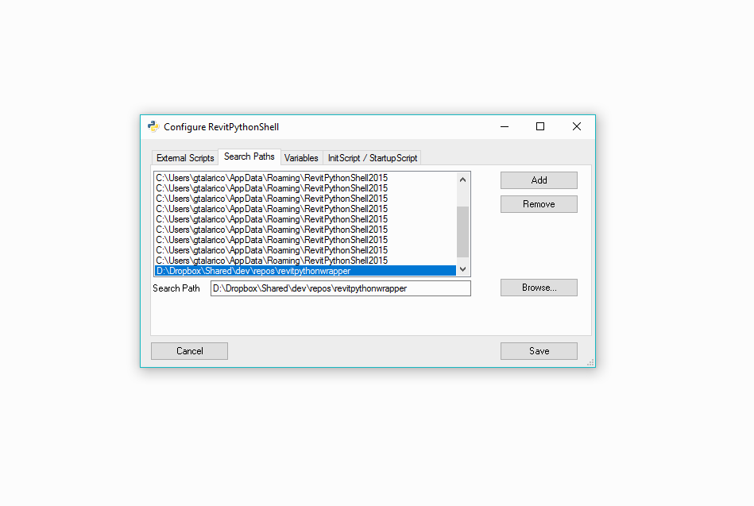
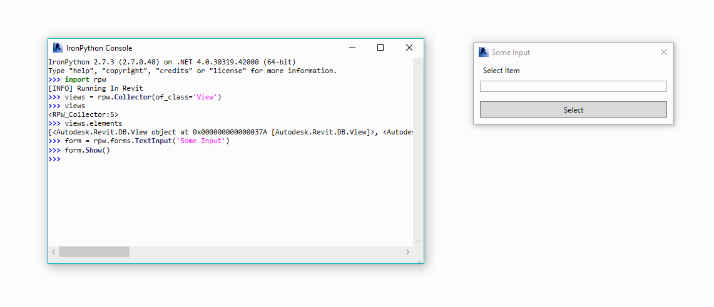

RevitPythonShell¶
The Revit Python Wrapper works well with the RevitPythonShell
 
- Clone the RevitPythonWrapper Repository
- Add the the repository directory to RevitPythonShell’s search path
The Revit Python Wrapper works well with the RevitPythonShell
 
- Clone the RevitPythonWrapper Repository
- Add the the repository directory to RevitPythonShell’s search path